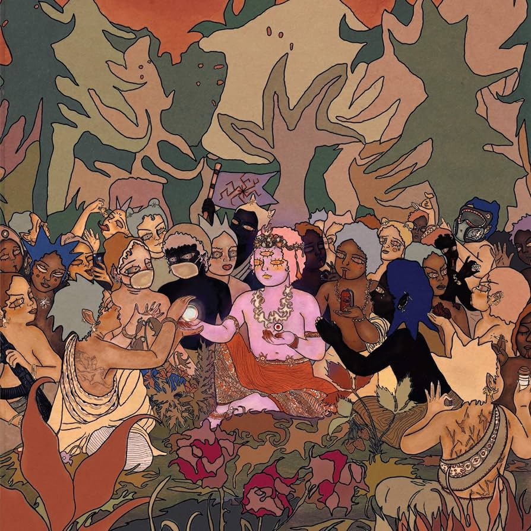
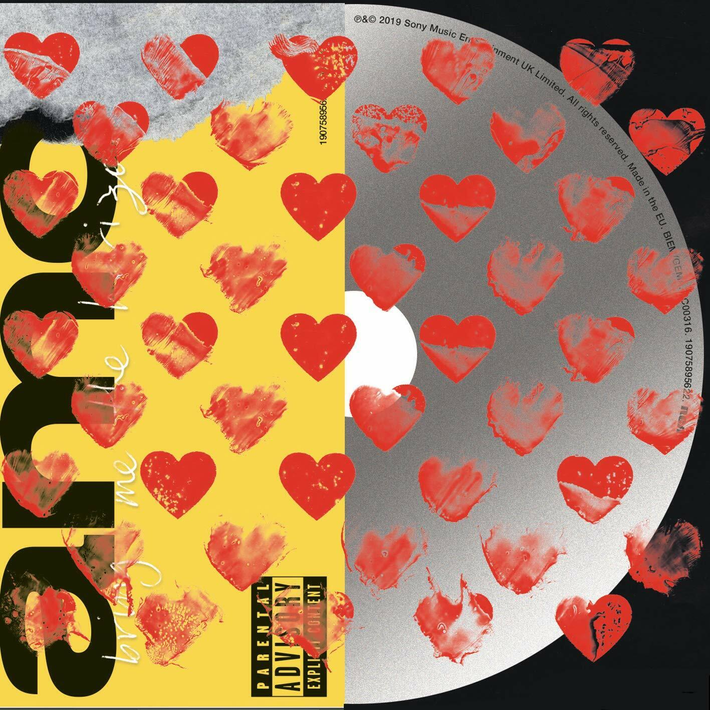

SURVIVAL HORROR

El ambicioso proyecto de los brutos de Sheffield, Inglaterra, Bring Me The Horizon, parece que va tomando forma con una vuelta a la agresividad, casi al thrash por momentos. Os recuerdo que lanzaron hace unos meses por RRSS la idea de publicar cuatro discos, con el mismo nombre Post Human, donde cada uno de ellos mostraría como tema principal un sentimiento
predominante, una idea. La locura es que los cuatro discos se supone que saldrán, de acuerdo con Oliver Sykes, ¡¡TODOS EN 2020!!
AMO

Amo es el sexto álbum de estudio de la banda británica Bring Me the Horizon. Originalmente iba ser lanzado el 11 de enero de 2019, pero se retraso el 25 de enero,
y se anunció el 22 de agosto de 2018, un día después del lanzamiento del primer sencillo "Mantra".
THAT´S THE SPIRIT

That's the Spirit —en español: Ese es el espíritu— es el nombre del quinto álbum de estudio de la banda británica Bring Me the Horizon. Fue lanzado el 11 de septiembre de 2015,
y marca un sonido bastante alejado al de sus orígenes como una banda de metalcore.
SEMPITERNAL

Sempiternal es el cuarto álbum de estudio de la banda de rock británica Bring Me the Horizon. Fue lanzado el 1 de abril de 2013 en todo el mundo a través de RCA Records,
un sello subsidiario de Sony Music, y el 2 de abril de 2013 en los Estados Unidos y Canadá a través de Epitaph Records.